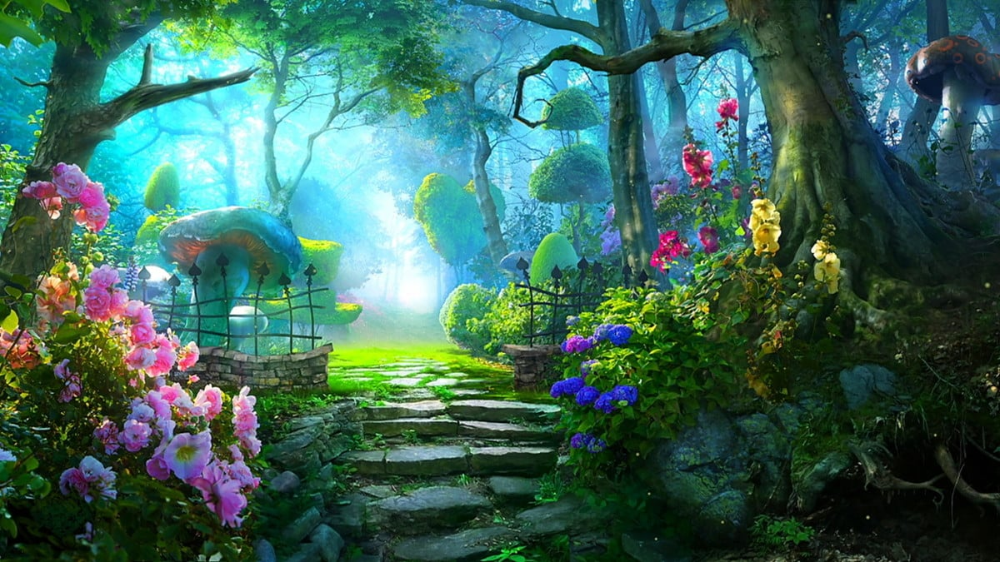

Na casa de minha avó achei um livro que falava sobre a "Cidade Encantada de Jiufen", que possuia breves dicas e um mapa, um pouco rasgado e sujo, que serviria de apoio para encontrá-la. Assim, você entra em um dilema em que precisa decidir o que fazer
Você volta para casa mas continua pensando na Cidade Encantada. Após cair no sono, voce tem um sonho que faz seu interesse pela aventura despertar...
Você dá início a sua jornada adentrando na Floresta Negra, seguindo o mapa deixado.